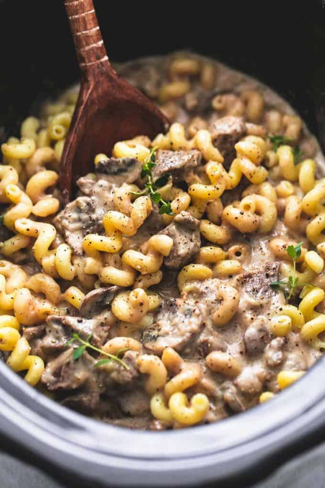

Crispy Potato Puffs

Description
This super crunchy twist on classic fries will certainly wow your guests and leave them wanting more.
Ingredients
- Stew meat
- Italian seasoning
- Salt and pepper, to taste
- Beef broth
- Fresh mushrooms
- Minced garlic
- Dijon mustard
- Sour cream
- Cream cheese
- Cornstarch
- Short pasta noodles
Steps
- First, lightly grease your slow cooker crock for easy cleaning later
- Then, add the stew meat and sprinkle Italian seasoning and salt and pepper to taste over the top.
- Next, add the mushrooms, beef broth, garlic, Dijon mustard, and Worcestershire sauce.
- About 30 minutes before you’re ready to eat, stir in the cornstarch (or you can also use flour if you don’t have cornstarch) into a ½ a cup of beef broth and stir mixture into a slow cooker.
- Then add in the cream cheese and sour cream, put the lid back on and cook another 20-30 minutes on high, stirring occasionally until cream cheese and sour cream are incorporated and the sauce is thickened.
- Right before you serve, give the dish a taste and add more salt and pepper if you like, then stir in the noodles. From there, you’re ready to serve immediately garnished with cracked black pepper and fresh thyme if desired.
- Enjoy!
Home